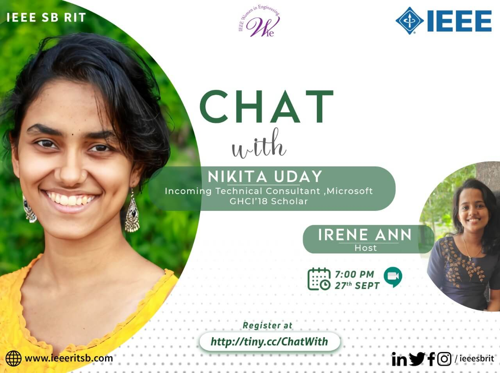
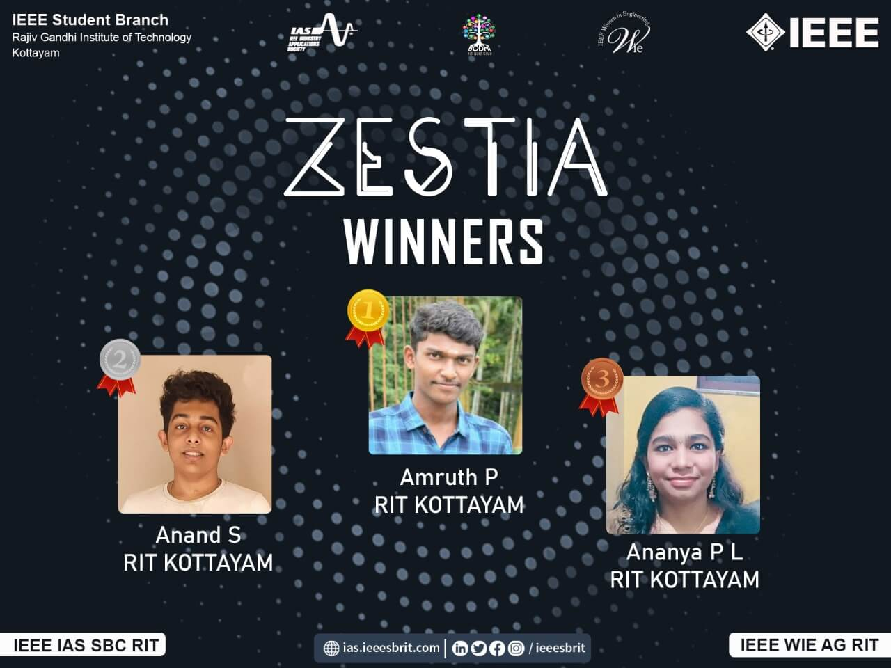

Blogging Competition
IEEE WIE Affinity Group of IEEE SB RIT organised a Blogging Competition as part of International Women's Day Celebrations on the theme "Break out to Challenge Yourself". The participants expressed their strong will to challenge themselves through their entries.
A Chat with Nikita Uday

To help students make an informed decision on suitable career choices and the preparation for moving towards that field, WIE AG of IEEE SB RIT organized “A chat with Nikita Uday” on 27th September 2020. The event was hosted by Irene Ann, S5 ECE. Nikita Uday, Technical Consultant Microsoft shared her preparation strategy and job recruitment procedures.
Zestia

Zestia, a science quiz competition as part of Science Week Celebrations was organised on 27th February 2021 at 6pm, jointly by IEEE IAS SBC RIT, WIE Affinity Group of IEEE SB RIT and Bodhi RIT Quiz Club. There were 17 participants from different colleges.